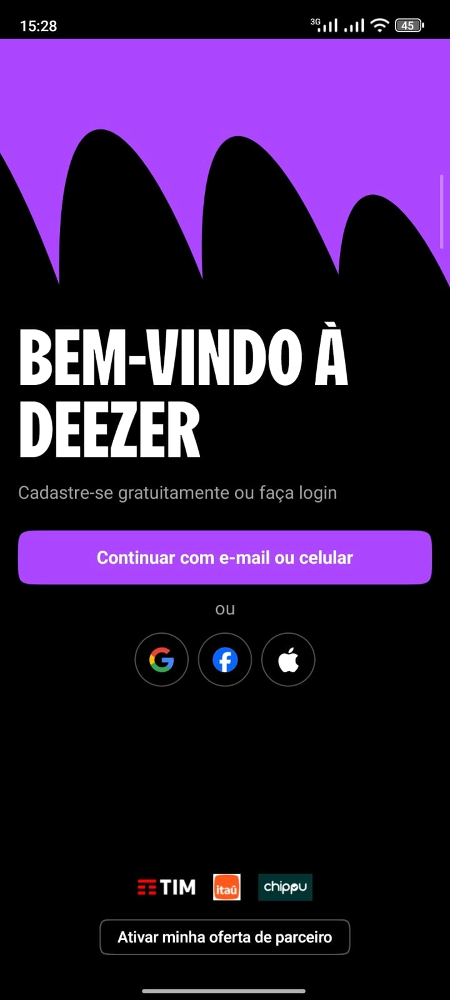

Mockups de referência das principais telas e avaliação de layout, tipografia, cores, fluxo de interação, usabilidade e feedback ao usuário.
Logotipo e proposta de valor centralizados guiam o olhar antes da ação.
Login social reduz fricção; opção por e-mail atende quem prefere método tradicional.
A combinação de tons escuros com elementos em roxo e textos claros cria contraste entre os diferentes componentes da interface, facilitando a identificação das informações e ações principais.

Cards organizados em carrosséis agrupam conteúdo por contexto (mixes, recomendações, histórico).
Quatro destinos principais sempre visíveis, com ícone + rótulo reduzindo ambiguidade.
Espaçamento generoso entre seções evita poluição visual mesmo com muito conteúdo.
A arte do álbum ocupa a maior área da tela, reforçando a experiência imersiva.
Botão de play maior e centralizado segue diretrizes de ergonomia para toque.
Funções secundárias ficam visíveis, mas discretas, sem competir com os controles principais.
O aplicativo possui uma seção de acessibilidade nas configurações, que direciona para as informações e políticas oficiais de acessibilidade da Deezer.
O Deezer disponibiliza informações sobre acessibilidade e recursos que ajudam pessoas com diferentes necessidades a utilizar a plataforma com mais facilidade e autonomia.
AA Deezer vem realizando melhorias para reduzir barreiras de uso e tornar diferentes áreas da plataforma mais acessíveis para seus usuários.
As telas seguem um padrão claro: cabeçalho, conteúdo rolável e navegação fixa no rodapé — reduz a curva de aprendizado entre telas.
Conteúdos relacionados (mixes, recomendações, histórico) são organizados em faixas horizontais, otimizando espaço vertical limitado.
Ações mais usadas (play, navegação) ficam nos terços inferiores da tela, coerente com uso de uma mão.
Login, Home, Player e Configurações compartilham grade, espaçamentos e cantos arredondados — reforça identidade única do produto.
Do login à primeira reprodução são no máximo 2–3 toques, reduzindo abandono no primeiro uso.
Barra inferior fixa e gestos padrão (arrastar para minimizar player) seguem convenções já conhecidas.
Cada tela tem uma ação primária evidente, evitando decisões simultâneas.
Configurações de acessibilidade estão em submenu — usuários que dependem delas podem levar mais tempo para descobri-las.
Fonte corporativa própria, criada em parceria com o estúdio Koto Berlin, inspirada na forma oval da batida do logotipo.
Se adapta do texto condensado ao expandido, mantendo a identidade em qualquer tamanho.
3–4 tamanhos cobrem todo o app, evitando ruído visual.
Música é consumida em movimento — o texto precisa ser lido "de relance".
Preto/cinza-escuro reduz fadiga visual em sessões longas e serve de base neutra para qualquer cor de acento escolhida.
Em "Tema e cor do aplicativo", o usuário escolhe entre várias opções de cor — sólidas e em gradiente — que passam a colorir ícones da barra inferior, botão de play e destaques da interface.
A tela de configuração já mostra um mockup do app com a cor aplicada — ícones de navegação, botão de play e capas de destaque — antes mesmo de salvar.
No mini-player e no carrossel de reprodução, o fundo muda de cor no momento em que uma faixa começa a tocar, absorvendo o tom dominante da capa do álbum atual — criando continuidade entre o visual e o que está soando.
A personalização muda apenas o acento de cor, mantendo a estrutura e a leitura da interface iguais para todos os usuários — só a "camada de humor" do app é pessoal.
O Deezer poderia trazer a função mais útil do spotify que é transmitir igual o chrome cast e YouTube do seu celular para outros dispositivos(Xbox, smatTv etc) pois acho q so falta isso agr pro deezer ser mais completo que todos os apps de música
Tradução automática de letras que estão em outros idiomas para o português.
Aplicativo nativo para smartwatches Samsung (Tizen), com música offline direto no relógio.
Favoritar uma música direto pela barra de notificação, sem precisar abrir o app.
Adicionar uma integração com o app Discord, como o Spotify disponibiliza. Onde é capaz de verem que música você está ouvindo e pode ser criada uma sala para outras pessoas se juntarem a você e fazer uma party juntos ouvindo a mesma música
Pedidos reais levantados no fórum oficial de sugestões da Deezer — mostram que as recomendações do grupo caminham na mesma direção do que os próprios usuários pedem.
Cabeçalho, conteúdo e navegação sempre no mesmo padrão em todas as telas.
Ações principais ficam sempre no terço inferior, fácil de tocar com uma mão.
Toggles e barra de progresso deixam claro o estado de cada ação.
Paleta e tipografia (Deezer Sans) reforçam a marca em qualquer tela.
Configurações ficam em submenu, difícil de achar no primeiro uso.
Ações como criar playlist não dão um retorno visual forte o suficiente.
Só o texto aumenta de tamanho, os ícones continuam do mesmo jeito.
A mudança de cor por humor não é apresentada ao usuário na primeira vez.
Colocar no primeiro acesso, não só nas configurações.
Após ações importantes, como salvar ou criar playlist.
Escalar junto com o texto, não separado dele.
Um tutorial rápido explicando a lógica das cores por humor.